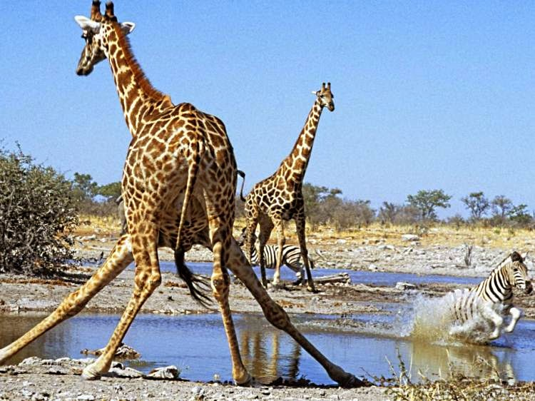
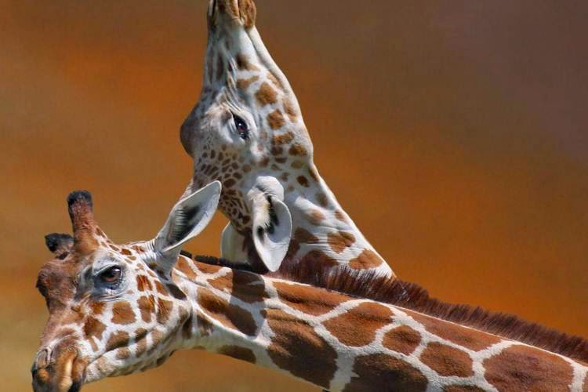
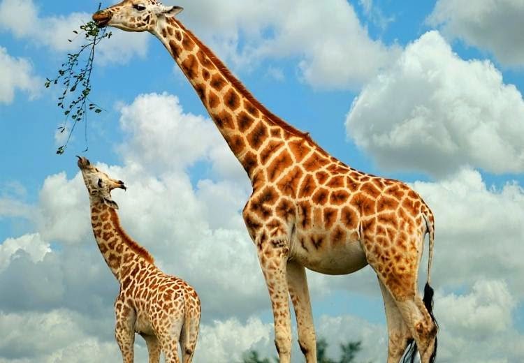
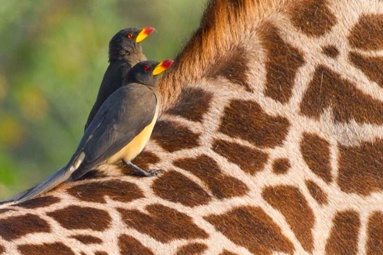

Цікаві факти про жирафів – найвищих тварин у світі
1. Висота Жирафа
Жирафи – це найвищі тварини на планеті Земля. Чоловічі особини можуть доростати до 5,5 м в висоту, а зріст новонароджених тварин може перевищувати висоту середньостатистичної людини, – цікавий факт.
2. Плаваючі жирафи
Згідно з математичними розрахунками вчених, жирафи можуть плавати, але виходити це у них буде дуже погано і ніколи ще не бачили жирафа за таким заняттям.
3. Сон жирафа
Цікавий факт: жирафу потрібно близько 20 хвилин сну на добу! Ці тварини мають найнижчу потребу у сні серед всіх ссавців. Такий режим сну і факт, що жираф проводить більшу частину дня на ногах, дозволяє йому постійно бути напоготові і захищатися від хижаків.
4. Звук
Цікавий факт: до недавнього часу була популярна теорія про те, що жирафи не видають звуків, а особливо звуків, за якими їх можна було б дізнаватися, як інших тварин. Працівники зоопарків кажуть, що від цих тварин можна почути тільки тихе пирхання або шипіння, але насправді, жираф видає низькочастотні звуки, які знаходяться за межами діапазону людського слуху.
5. Шия
Довжина шиї жирафа може досягати 1,8 м в довжину, – цікавий факт.
6. Потреба у воді
Шия жирафа занадто коротка, щоб досягти землі і спокійно пити воду, тому тварина повинна приймати дуже незручну позу. Але на превелике щастя тварини, жирафи отримують більшу частину води з рослин, тому п’ють воду з відкритих джерел лише кілька разів на тиждень. Жирафи можуть прожити без питної води довше, ніж верблюди.
7. Язик жирафа
Цікавий факт: Жираф може висовувати язика на 45 сантиметрів.
8. Унікальний забарвлення
Забарвлення жирафа подібне відбиткам пальців людини. Знайти двух жирафів з однаковим забарвленням і плямами неможливо.
9. Африка
Сучасна Африка – це місце проживання гігантів наземного тваринного світу: африканського слона і жирафа, – цікавий факт.
10. Захист
На голові у жирафів знаходяться два обтягнутих шерстю ріжка. І, часом, ці спокійні травоїдні тварини б’ються ними між собою чи з хижаками. Між самцями жирафа часто відбуваються конфлікти за територію, які закінчуються боротьбою шиями, де ріжки стають несмертельною, але дуже неприємною зброєю. Діаметр копит жирафа дозволяє дати відсіч льву. Вченим відомі випадки, коли жираф потужним ударом копита в груди вбивав лева, – цікавий факт.
11. Позіхання
Жираф це єдина хребетна тварина, яка не позіхає. Вважається, що позіхання активізує процес подачі додаткового кисню в організм і поліпшує роботу мозку тварин, але, виходить, що така процедура для жирафа є зайвою. Вчені пояснюють це великою відстанню між головою, серцем і легенями тварини, що призвело до формування спеціальних пристосувань системи дихання і кровообігу жирафа, а в результаті усунення необхідності в позіханні, – цікавий факт.
12. Ноги тварини
Довжина ніг жирафа складає 1,81 м – більше, ніж зріст більшості людей.
13. Діти
Цікавий факт: новонароджені жирафи вже протягом півгодини можуть піднятися на ноги, а через 10 годин життя можуть йти поруч зі своєю сім’єю. Малюків ніколи не залишають наодинці – один дорослий жираф завжди залишається доглядати за ними, в той час як інші вирушають у пошуках їжі.
14. Швидкість
Жирафи на диво швидкі тварини. Середня швидкість ходьби тварини на тривалі дистанції становить 16 км/год, а при швидкому галопі тварина може досягти швидкості 56 км/год і легко обганяє людину або коня. На великій швидкості у тварини швидко збивається дихання – все через довгу трахею, тому бігають жирафи не довго і не часто, – цікавий факт.
15. Домашній улюбленець
Стародавні Єгиптяни ставилися до жирафів, як до домашніх улюбленців. Вже в 2500 році до нашої ери, багато єгипетських правителів встигли обзавестися жирафами – символом влади і багатства. Часто жирафів дарували правителям інших країн. Такий подарунок дістався і Юлію Цезарю. Жираф його дуже здивував і нову для нього тварину він називав верблюдо-леопардом, тому що жираф нагадував йому комбінацію саме цих двох тварин.
16. Птахи-помічники
Цікавий факт: жовтоклювих буйволячих шпаків можна часто побачити на спині і шиї жирафа. Цей шпак живиться комахами, кліщами та іншими нашкірними паразитами великих ссавців і виконує свою лікувальну функцію. Крім цього, шпаки своїм гучним щебетанням часто попереджають тварин про небезпеку.
17. Кров’яний тиск
Жирафи мають найвищий кров’яний тиск серед всіх ссавців світу: 280/180 мм. Це в два рази більше, ніж тиск середньостатистичної людини. Таку особливість вчені пояснюють потребою доставляння крові до мозку з допомогою високого тиску, – цікавий факт.
18. Раціон харчування
Жирафи їдять близько 35 кг їжі в день. У звичайний раціон харчування тварини входить листя акації.
19. Структура кісток
Цікавий факт про жирафів: у них незвично худі ноги, але завдяки спеціалізованій структурі кісток, ноги тварини можуть підтримувати величезну вагу.
20. Оптимальне місце проживання
Жирафи живуть в саванах по всій Африці. Вони воліють відкриті ліси, де є невелика кількість дерев і чагарників.
21. Вік
У віці 3-6 років тварину можна вважати повністю зрілою/дорослою. Жирафи можуть жити до 20 років.
22. Популяція і сучасні загрози
Цікавий факт: популяція жирафів на даний момент не надає вченим причин для хвилювання, а міжнародні природоохоронні організації відносять жирафів до списку тварин, “що викликають найменші побоювання”. Але деякі активісти зазначають, що популяція тварин за останні роки скоротилася до 80000 особин і такі темпи можуть дуже швидко поставити їх під загрозу. Якщо вам сподобались цікаві факти про жирафів, то слідуйте за іншими в спеціальному розділі Цікаві факти.